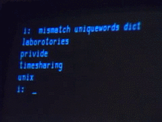
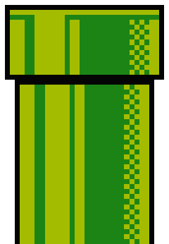
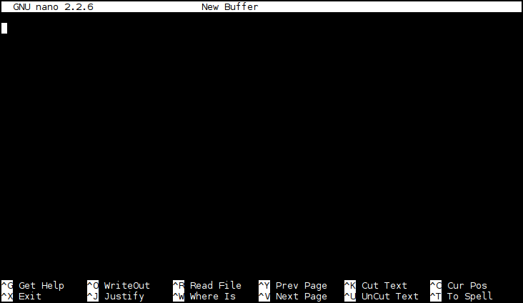

Late last year, a side trip into text utilities got me thinking about how much my writing habits depend on the Linux command line. This struck me as a good hook for talking about the tools I use every day with an audience of mixed technical background.
So now I’m writing a (short, haphazard) book. This isn’t a book about system administration, or writing big software systems, or becoming a wizard. I am not a wizard, and I don’t subscribe to the idea that wizardry is a requirement for using these tools. In fact I barely know what I’m doing most of the time, but I still get some stuff done.
My hope herein is to convey something useful to people who use computers every day, but for whom the command line environment seems mystifying, obscure, or generally uninviting. I intend to gloss over many complexities in favor of demonstrating a rough-and-ready toolset.
This is a work in progress, and some sections may be unfinished or riddled with error. p1k3.com/userland-book.git should be considered the canonical git repo, but I’m pushing everything to a GitHub mirror, and welcome feedback there.
I may eventually dedicate this thing to the public domain, but for the time being please feel free to use it under the terms of Creative Commons BY-SA (Attribution / Share-Alike), whatever the latest version is. I promise I will not license it under more restrictive terms than that.
There’re a lot of ways to structure an introduction to the command line. I’m going to start with writing as a point of departure because, aside from web development, it’s what I use a computer for most. I want to shine a light on the humane potential of ideas that are usually understood as nerd trivia. Computers have utterly transformed the practice of writing within the space of my lifetime, but it seems to me that writers as a class miss out on many of the software tools and patterns taken as a given in more “technical” fields.
Writing, particularly writing of any real scope or complexity, is very much a technical task. It makes demands, both physical and psychological, of its practitioners. As with woodworkers, graphic artists, and farmers, writers exhibit strong preferences in their tools, materials, and environment, and they do so because they’re engaged in a physically and cognitively challenging task.
My thesis is that the modern Linux command line is a pretty good environment for working with English prose and prosody, and that maybe this will illuminate the ways it could be useful in your own work with a computer, whatever that work happens to be.
What software are we actually talking about when we say “the command line”?
For the purposes of this discussion, we’re talking about an environment built on a very old paradigm called Unix.
…except what classical Unix really looks like is this:

The Unix-like environment we’re going to use isn’t very classical, really. It’s an operating system kernel called Linux, combined with a bunch of things written by other people (people in the GNU and Debian projects, and many others). Purists will tell you that this isn’t properly Unix at all. In strict historical terms they’re right, or at least a certain kind of right, but for the purposes of my cultural agenda I’m going to ignore them right now.
{cut to actual terminal blinkety blinking}
This is what’s called a shell. There are many different shells, but they pretty much all operate on the same idea: You navigate a filesystem and run programs by typing commands. Commands can be combined in various ways to make programs of their own, and in fact the way you use the computer is often just to write little programs that invoke other programs, turtles-all-the-way-down style.
The standard shell these days is something called Bash, so we’ll use Bash. It’s what you’ll most often see in the wild. Like most shells, Bash is ugly and stupid in more ways than it is possible to easily summarize. It’s also an incredibly powerful and expressive piece of software.
Have you ever played a text-based adventure game or MUD, of the kind that describes a setting and takes commands for movement and so on? Readers of a certain age and temperament might recognize the opening of Crowther & Woods' Adventure, the great-granddaddy of text adventure games:
YOU ARE STANDING AT THE END OF A ROAD BEFORE A SMALL BRICK BUILDING.
AROUND YOU IS A FOREST. A SMALL STREAM FLOWS OUT OF THE BUILDING ANd
DOWN A GULLY.
> GO EAST
YOU ARE INSIDE A BUILDING, A WELL HOUSE FOR A LARGE SPRING.
THERE ARE SOME KEYS ON THE GROUND HERE.
THERE IS A SHINY BRASS LAMP NEARBY.
THERE IS FOOD HERE.
THERE IS A BOTTLE OF WATER HERE.
In much the same way, you can think of the shell as a kind of environment you
inhabit, the same way your character might inhabit an adventure game. Or as a
sort of vehicle for getting around inside of computers. The difference is that
instead of navigating around virtual rooms and hallways with commands like
LOOK and EAST, you navigate between directories by typing commands like
ls and cd notes:
$ ls
code Downloads notes p1k3 photos scraps userland-book
$ cd notes
$ ls
notes.txt sparkfun TODO.txt
ls lists files. Some files are directories, which means they can contain
other files, and you can step inside of them by typing cd (for change
directory).
In the Macintosh and Windows world, directories have been called “folders” for a long time now. This isn’t the worst metaphor for what’s going on, and it’s so pervasive by now that it’s not worth fighting about. It’s also not exactly a great metaphor, since computer filesystems aren’t built very much like the filing cabinets of yore. A directory acts a lot like a container of some sort, but it’s an infinitely expandable one which may contain nested sub-spaces much larger than itself. Directories are frequently like the TARDIS: Bigger on the inside.
When you’re in the shell, you have many tools at your disposal - programs that can be used on many different files, or chained together with other programs. They tend to have weird, cryptic names, but a lot of them do very simple things. Tasks that might be a menu item in a big program like Word, like counting the number of words in a document or finding a particular phrase, are often programs unto themselves.
Suppose you have some files, and you’re curious what’s in them. For example,
suppose you’ve got a list of authors you’re planning to reference, and you just
want to check its contents real quick-like. This is where our friend cat
comes in:
$ cat authors_sff
Ursula K. Le Guin
Jo Walton
Pat Cadigan
John Ronald Reuel Tolkien
Vanessa Veselka
James Tiptree, Jr.
John Brunner
“Why,” you might be asking, “is the command to dump out the contents of a file
to a screen called cat? What do felines have to do with anything?”
It turns out that cat is actually short for “concatenate”, which is a long
word basically meaning “stick things together”. In programming, we usually
refer to sticking two bits of text together as “string concatenation”, probably
because programmers like to feel like they’re being very precise about very
simple actions.
Suppose you wanted to see the contents of a set of author lists:
$ cat authors_sff authors_contemporary_fic authors_nat_hist
Ursula K. Le Guin
Jo Walton
Pat Cadigan
John Ronald Reuel Tolkien
Vanessa Veselka
James Tiptree, Jr.
John Brunner
Eden Robinson
Vanessa Veselka
Miriam Toews
Gwendolyn L. Waring
We’re working with three filenames: authors_sff, authors_contemporary_fic,
and authors_nat_hist. That’s an awful lot of typing every time we want to do
something to all three files. Fortunately, our shell offers a shorthand for
“all the files that start with authors_”:
$ cat authors_*
Eden Robinson
Vanessa Veselka
Miriam Toews
Gwendolyn L. Waring
Ursula K. Le Guin
Jo Walton
Pat Cadigan
John Ronald Reuel Tolkien
Vanessa Veselka
James Tiptree, Jr.
John Brunner
In Bash-land, * basically means “anything”, and is known in the vernacular,
somewhat poetically, as a “wildcard”. You should always be careful with
wildcards, especially if you’re doing anything destructive. They can and will
surprise the unwary. Still, once you’re used to the idea, they will save you a
lot of RSI.
There’s a problem here. Our author list is out of order, and thus confusing to reference. Fortunately, since one of the most basic things you can do to a list is to sort it, someone else has already solved this problem for us. Here’s a command that will give us some organization:
$ sort authors_*
Eden Robinson
Gwendolyn L. Waring
James Tiptree, Jr.
John Brunner
John Ronald Reuel Tolkien
Jo Walton
Miriam Toews
Pat Cadigan
Ursula K. Le Guin
Vanessa Veselka
Vanessa Veselka
Does it bother you that they aren’t sorted by last name? Me too. As a partial
solution, we can ask sort to use the second “field” in each line as its sort
key (by default, sort treats whitespace as a division between fields):
$ sort -k2 authors_*
John Brunner
Pat Cadigan
Ursula K. Le Guin
Gwendolyn L. Waring
Eden Robinson
John Ronald Reuel Tolkien
James Tiptree, Jr.
Miriam Toews
Vanessa Veselka
Vanessa Veselka
Jo Walton
That’s closer, right? It sorted on “Cadigan” and “Veselka” instead of “Pat” and “Vanessa”. (Of course, it’s still far from perfect, because the second field in each line isn’t necessarily the person’s last name.)
Above, when we wanted to ask sort to behave differently, we gave it what is
known as an option. Most programs with command-line interfaces will allow
their behavior to be changed by adding various options. Options usually
(but not always!) look like -o or --option.
For example, if we wanted to see just the unique lines, irrespective of case, for a file called colors:
$ cat colors
RED
blue
red
BLUE
Green
green
GREEN
We could write this:
$ sort -uf colors
blue
Green
RED
Here -u stands for unique and -f stands for fold case, which means
to treat upper- and lower-case letters as the same for comparison purposes. You’ll
often see a group of short options following the - like this.
Did you notice how Vanessa Veselka shows up twice in our list of authors?
That’s useful if we want to remember that she’s in more than one category, but
it’s redundant if we’re just worried about membership in the overall set of
authors. We can make sure our list doesn’t contain repeating lines by using
sort, just like with that list of colors:
$ sort -u -k2 authors_*
John Brunner
Pat Cadigan
Ursula K. Le Guin
Gwendolyn L. Waring
Eden Robinson
John Ronald Reuel Tolkien
James Tiptree, Jr.
Miriam Toews
Vanessa Veselka
Jo Walton
But there’s another approach to this – sort is good at only displaying a line
once, but suppose we wanted to see a count of how many different lists an
author shows up on? sort doesn’t do that, but a command called uniq does,
if you give it the option -c for count.
uniq moves through the lines in its input, and if it sees a line more than
once in sequence, it will only print that line once. If you have a bunch of
files and you just want to see the unique lines across all of those files, you
probably need to run them through sort first. How do you do that?
$ sort authors_* | uniq -c
1 Eden Robinson
1 Gwendolyn L. Waring
1 James Tiptree, Jr.
1 John Brunner
1 John Ronald Reuel Tolkien
1 Jo Walton
1 Miriam Toews
1 Pat Cadigan
1 Ursula K. Le Guin
2 Vanessa Veselka
The | is called a “pipe”. In the command above, it tells your shell that
instead of printing the output of sort authors_* right to your terminal, it
should send it to uniq -c.

Pipes are some of the most important magic in the shell. When the people who built Unix in the first place give interviews about the stuff they remember from the early days, a lot of them reminisce about the invention of pipes and all of the new stuff it immediately made possible.
Pipes help you control a thing called “standard IO”. In the world of the command line, programs take input and produce output. A pipe is a way to hook the output from one program to the input of another.
Unlike a lot of the weirdly named things you’ll encounter in software, the metaphor here is obvious and makes pretty good sense. It even kind of looks like a physical pipe.
What if, instead of sending the output of one program to the input of another, you’d like to store it in a file for later use?
Check it out:
$ sort authors_* | uniq > ./all_authors
$ cat all_authors
Eden Robinson
Gwendolyn L. Waring
James Tiptree, Jr.
John Brunner
John Ronald Reuel Tolkien
Jo Walton
Miriam Toews
Pat Cadigan
Ursula K. Le Guin
Vanessa Veselka
I like to think of the > as looking like a little funnel. It can be
dangerous – you should always make sure that you’re not going to clobber
an existing file you actually want to keep.
If you want to tack more stuff on to the end of an existing file, you can use
>> instead. To test that, let’s use echo, which prints out whatever string
you give it on a line by itself:
$ echo 'hello' > hello_world
$ echo 'world' >> hello_world
$ cat hello_world
hello
world
You can also take a file and pull it directly back into the input of a given program, which is a bit like a funnel going the other direction:
$ nl < all_authors
1 Eden Robinson
2 Gwendolyn L. Waring
3 James Tiptree, Jr.
4 John Brunner
5 John Ronald Reuel Tolkien
6 Jo Walton
7 Miriam Toews
8 Pat Cadigan
9 Ursula K. Le Guin
10 Vanessa Veselka
nl is just a way to number lines. This command accomplishes pretty much
the same thing as cat all_authors | nl, or nl all_authors. You won’t see
it used as often as | and >, since most utilities can read files on their
own, but it can save you typing cat quite as often.
We’ll use these features liberally from here on out.
--help and man pagesYou can change the behavior of most tools by giving them different options. This is all well and good if you already know what options are available, but what if you don’t?
Often, you can ask the tool itself:
$ sort --help
Usage: sort [OPTION]... [FILE]...
or: sort [OPTION]... --files0-from=F
Write sorted concatenation of all FILE(s) to standard output.
Mandatory arguments to long options are mandatory for short options too.
Ordering options:
-b, --ignore-leading-blanks ignore leading blanks
-d, --dictionary-order consider only blanks and alphanumeric characters
-f, --ignore-case fold lower case to upper case characters
-g, --general-numeric-sort compare according to general numerical value
-i, --ignore-nonprinting consider only printable characters
-M, --month-sort compare (unknown) < 'JAN' < ... < 'DEC'
-h, --human-numeric-sort compare human readable numbers (e.g., 2K 1G)
-n, --numeric-sort compare according to string numerical value
-R, --random-sort sort by random hash of keys
--random-source=FILE get random bytes from FILE
-r, --reverse reverse the result of comparisons
…and so on. (It goes on for a while in this vein.)
If that doesn’t work, or doesn’t provide enough info, the next thing to try is called a man page. (“man” is short for “manual”. It’s sort of an unfortunate abbreviation.)
$ man sort
SORT(1) User Commands SORT(1)
NAME
sort - sort lines of text files
SYNOPSIS
sort [OPTION]... [FILE]...
sort [OPTION]... --files0-from=F
DESCRIPTION
Write sorted concatenation of all FILE(s) to standard output.
…and so on. Manual pages vary in quality, and it can take a while to get used to reading them, but they’re very often the best place to look for help.
If you’re not sure what program you want to use to solve a given problem, you
might try searching all the man pages on the system for a keyword. man
itself has an option to let you do this - man -k keyword - but most systems
also have a shortcut called apropos, which I like to use because it’s easy to
remember if you imagine yourself saying “apropos of [some problem I have]…”
$ apropos -s1 sort
apt-sortpkgs (1) - Utility to sort package index files
bunzip2 (1) - a block-sorting file compressor, v1.0.6
bzip2 (1) - a block-sorting file compressor, v1.0.6
comm (1) - compare two sorted files line by line
sort (1) - sort lines of text files
sq (1) - squeeze or unsqueeze a sorted word list
texindex (1) - sort Texinfo index files
tsort (1) - perform topological sort
unsq (1) - squeeze or unsqueeze a sorted word list
It’s useful to know that the manual represented by man has numbered sections
for different kinds of manual pages. Most of what the average user needs to
know about lives in section 1, “User Commands”, so you’ll often see the names
of different tools written like sort(1) or cat(1). This can be a good way
to make it clear in writing that you’re talking about a specific piece of
software rather than a verb or a small carnivorous mammal. (I specified -s1
for section 1 above just to cut down on clutter, though in practice I usually
don’t bother.)
Like other literary traditions, Unix is littered with this sort of convention. This one just happens to date from a time when the manual was still a physical book.
wc stands for word count. It does about what you’d expect - it
counts the number of words in its input.
$ wc index.md
736 4117 24944 index.md
736 is the number of lines, 4117 the number of words, and 24944 the number of
characters in the file I’m writing right now. I use this constantly. Most
obviously, it’s a good way to get an idea of how much you’ve written. wc is
the tool I used to track my progress the last time I tried National Novel
Writing Month:
$ find ~/p1k3/archives/2010/11 -regextype egrep -regex '.*([0-9]+|index)' -type f | xargs wc -w | grep total
6585 total
$ cowsay 'embarrassing.'
_______________
< embarrassing. >
---------------
\ ^__^
\ (oo)\_______
(__)\ )\/\
||----w |
|| ||
Anyway. The less obvious thing about wc is that you can use it to count the
output of other commands. Want to know how many unique authors we have?
$ sort authors_* | uniq | wc -l
10
This kind of thing is trivial, but it comes in handy more often than you might think.
Remember our old pal cat, which just splats everything it’s given back to
standard output?
Sometimes you’ve got a piece of output that’s more than you actually want to deal with at once. Maybe you just want to glance at the first few lines in a file:
$ head -3 colors
RED
blue
red
…or maybe you want to see the last thing in a list:
$ sort colors | uniq -i | tail -1
red
…or maybe you’re only interested in the first “field” in some list. You might
use cut here, asking it to treat spaces as delimiters between fields and
return only the first field for each line of its input:
$ cut -d' ' -f1 ./authors_*
Eden
Vanessa
Miriam
Gwendolyn
Ursula
Jo
Pat
John
Vanessa
James
John
Suppose we’re curious what the few most commonly occurring first names on our author list are? Here’s an approach, silly but effective, that combines a lot of what we’ve discussed so far and looks like plenty of one-liners I wind up writing in real life:
$ cut -d' ' -f1 ./authors_* | sort | uniq -ci | sort -n | tail -3
1 Ursula
2 John
2 Vanessa
Let’s walk through this one step by step:
First, we have cut extract the first field of each line in our author lists.
cut -d' ' -f1 ./authors_*
Then we sort these results
| sort
and pass them to uniq, asking it for a case-insensitive count of each
repeated line
| uniq -ci
then sort again, numerically,
| sort -n
and finally, we chop off everything but the last three lines:
| tail -3
If you wanted to make sure to count an individual author’s first name only once, even if that author appears more than once in the files, you could instead do:
$ sort -u ./authors_* | cut -d' ' -f1 | uniq -ci | sort -n | tail -3
1 Ursula
1 Vanessa
2 John
After all those contortions, what if you actually just want to see which lists an individual author appears on?
$ grep 'Vanessa' ./authors_*
./authors_contemporary_fic:Vanessa Veselka
./authors_sff:Vanessa Veselka
grep takes a string to search for and, optionally, a list of files to search
in. If you don’t specify files, it’ll look through standard input instead:
$ cat ./authors_* | grep 'Vanessa'
Vanessa Veselka
Vanessa Veselka
Most of the time, piping the output of cat to grep is considered silly,
because grep knows how to find things in files on its own. Many thousands of
words have been written on this topic by leading lights of the nerd community.
You’ve probably noticed that this result doesn’t contain filenames (and thus
isn’t very useful to us). That’s because all grep saw was the lines in the
files, not the names of the files themselves.
To close out this introductory chapter, let’s spend a little time on a topic that will likely vex, confound, and (occasionally) delight you for as long as you are acquainted with the command line.
When I was talking about grep a moment ago, I fudged the details more than a
little by saying that it expects a string to search for. What grep
actually expects is a pattern. Moreover, it expects a specific kind of
pattern, what’s known as a regular expression, a cumbersome phrase frequently
shortened to regex.
There’s a lot of theory about what makes up a regular expression. Fortunately, very little of it matters to the short version that will let you get useful stuff done. The short version is that a regex is like using wildcards in the shell to match groups of files, but with more magic.
$ grep 'Jo.*' ./authors_*
./authors_sff:Jo Walton
./authors_sff:John Ronald Reuel Tolkien
./authors_sff:John Brunner
The pattern Jo.* says that we’re looking for lines which contain a literal
Jo, followed by any quantity (including none) of any character. In a regex,
. means “anything” and * means “any amount of the preceding thing”.
. and * are magical. In the particular dialect of regexen understood
by grep, other magical things include:
^ | start of a line |
$ | end of a line |
[abc] | one of a, b, or c |
[a-z] | a character in the range a through z |
[0-9] | a character in the range 0 through 9 |
+ | one or more of the preceding thing |
? | 0 or 1 of the preceding thing |
* | any number of the preceding thing |
(foo|bar) | "foo" or "bar" |
(foo)? | optional "foo" |
It’s actually a little more complicated than that: By default, if you want to
use a lot of the magical characters, you have to prefix them with \. This is
both ugly and confusing, so unless you’re writing a very simple pattern, it’s
often easiest to call grep -E, for Extended regular expressions, which
means that lots of characters will have special meanings.
Authors with 4-letter first names:
$ grep -iE '^[a-z]{4} ' ./authors_*
./authors_contemporary_fic:Eden Robinson
./authors_sff:John Ronald Reuel Tolkien
./authors_sff:John Brunner
A count of authors named John:
$ grep -c '^John ' ./all_authors
2
Lines in this file matching the words “magic” or “magical”:
$ grep -iE 'magic(al)?' ./index.md
Pipes are some of the most important magic in the shell. When the people who
shell to match groups of files, but with more magic.
`.` and `*` are magical. In the particular dialect of regexen understood
by `grep`, other magical things include:
use a lot of the magical characters, you have to prefix them with `\`. This is
Lines in this file matching the words "magic" or "magical":
$ grep -iE 'magic(al)?' ./index.md
Find some “-agic” words in a big list of words:
$ grep -iE '(m|tr|pel)agic' /usr/share/dict/words
magic
magic's
magical
magically
magician
magician's
magicians
pelagic
tragic
tragically
tragicomedies
tragicomedy
tragicomedy's
grep isn’t the only - or even the most important - tool that makes use of
regular expressions, but it’s a good place to start because it’s one of the
fundamental building blocks for so many other operations. Filtering lists of
things, matching patterns within collections, and writing concise descriptions
of how text should be transformed are at the heart of a practical approach to
Unix-like systems. Regexen turn out to be a seductively powerful way to do
these things - so much so that they’ve crept their way into text editors,
databases, and full-featured programming languages.
There’s a dark side to all of this, for the truth about regular expressions is that they are ugly, inconsistent, brittle, and incredibly difficult to think clearly about. They take years to master and reward the wielder with great power, but they are also a trap: a temptation towards the path of cleverness masquerading as wisdom.
*
I’ll be returning to this theme, but for the time being let’s move on. Now that we’ve established, however haphazardly, some of the basics, let’s consider their application to a real-world task.
The previous chapter introduced a bunch of tools using contrived examples. Now we’ll look at a real problem, and work through a solution by building on tools we’ve already covered.
So on to the problem: I write poetry.
{rimshot dot wav}
Most of the poems I have written are not very good, but lately I’ve been thinking that I’d like to comb through the last ten years' worth and pull the least-embarrassing stuff into a single collection.
I’ve hinted at how the contents of my blog are stored as files, but let’s take a look at the whole thing:
$ ls -F ~/p1k3/archives/
1997/ 2003/ 2009/ bones/ meta/
1998/ 2004/ 2010/ chapbook/ winfield/
1999/ 2005/ 2011/ cli/ wip/
2000/ 2006/ 2012/ colophon/
2001/ 2007/ 2013/ europe/
2002/ 2008/ 2014/ hack/
(ls, again, just lists files. -F tells it to append a character that shows
it what type of file we’re looking at, such as a trailing / for directories.
~ is a shorthand that means “my home directory”, which in this case is
/home/brennen.)
Each of the directories here holds other directories. The ones for each year have sub-directories for the months of the year, which in turn contain files for the days. The files are just little pieces of HTML and Markdown and some other stuff. Many years ago, before I really knew how to program, I wrote a script to glue them all together into a web page and serve them up to visitors. This sounds complicated, but all it really means is that if I want to write a blog entry, I just open a file and type some stuff. Here’s an example for March 1st:
$ cat ~/p1k3/archives/2014/3/1
<h1>Saturday, March 1</h1>
<markdown>
Sometimes I'm going along on a Saturday morning, still a little dazed from the
night before, and I think something like "I should just go write a detailed
analysis of hooded sweatshirts". Mostly these thoughts don't survive contact
with an actual keyboard. It's almost certainly for the best.
</markdown>
And here’s an older one that contains a short poem:
$ cat ~/p1k3/archives/2012/10/9
<h1>tuesday, october 9</h1>
<freeverse>i am a stateful machine
i exist in a manifold of consequence
a clattering miscellany of impure functions
and side effects</freeverse>
Notice that <freeverse> bit? It kind of looks like an HTML tag, but it’s
not. What it actually does is tell my blog script that it should format the
text it contains like a poem. The specifics don’t matter for our purposes
(yet), but this convention is going to come in handy, because the first thing I
want to do is get a list of all the entries that contain poems.
Remember grep?
$ grep -ri '<freeverse>' ~/p1k3/archives > ~/possible_poems
Let’s step through this bit by bit:
First, I’m asking grep to search recursively, ignoring case.
“Recursively” just means that every time the program finds a directory, it
should descend into that directory and search in any files there as well.
grep -ri
Next comes a pattern to search for. It’s in single quotes because the
characters < and > have a special meaning to the shell, and here we need
the shell to understand that it should treat them as literal angle brackets
instead.
'<freeverse>'
This is the path I want to search:
~/p1k3/archives
Finally, because there are so many entries to search, I know the process will
be slow and produce a large list, so I tell the shell to redirect it to a file
called possible_poems in my home directory:
> ~/possible_poems
This is quite a few instances…
$ wc -l ~/possible_poems
679 /home/brennen/possible_poems
…and it’s also not super-pretty to look at:
$ head -5 ~/possible_poems
/home/brennen/p1k3/archives/2011/10/14:<freeverse>i've got this friend has a real knack
/home/brennen/p1k3/archives/2011/4/25:<freeverse>i can't claim to strive for it
/home/brennen/p1k3/archives/2011/8/10:<freeverse>one diminishes or becomes greater
/home/brennen/p1k3/archives/2011/8/12:<freeverse>
/home/brennen/p1k3/archives/2011/1/1:<freeverse>six years on
Still, it’s a decent start. I can see paths to the files I have to check, and usually a first line. Since I use a fancy text editor, I can just go down the list opening each file in a new window and copying the stuff I’m interested in to a new file.
This is good enough for government work, but what if instead of jumping around between hundreds of files, I’d rather read everything in one file and just weed out the bad ones as I go?
$ cat `grep -ril '<freeverse>' ~/p1k3/archives` > ~/possible_poems_full
This probably bears some explaining. grep is still doing all the real work
here. The main difference from before is that -l tells grep to just list any
files it finds which contain a match.
`grep -ril '<freeverse>' ~/p1k3/archives`
Notice those backticks around the grep command? This part is a little trippier. It turns out that if you put backticks around something in a command, it’ll get executed and replaced with its result, which in turn gets executed as part of the larger command. So what we’re really saying is something like:
$ cat [all of the files in the blog directory with <freeverse> in them]
Did you catch that? I just wrote a command that rewrote itself as a different, more specific command. And it appears to have worked on the first try:
$ wc ~/possible_poems_full
17628 80980 528699 /home/brennen/possible_poems_full
Welcome to wizard school.
In the preceding chapter, I worked through accumulating
a big piece of text from some other, smaller texts. I started with a bunch of
files and wound up with one big file called potential_poems_full.
Let’s talk for a minute about how programmers approach problems like this one. What I’ve just done is sort of an old-school humanities take on things: Metaphorically speaking, I took a book off the shelf and hauled it down to the copy machine to xerox a bunch of pages, and now I’m going to start in on them with a highlighter and some Post-Its or something. A process like this will often trigger a cascade of questions in the programmer-mind:
A unifying theme of these questions is that they could all be answered by involving a little more abstraction.
*
Some kinds of abstraction are so common in the physical world that we can forget they’re part of a sophisticated technology. For example, a good deal of bicycle maintenance can be accomplished with a cheap multi-tool containing a few different sizes of hex wrench and a couple of screwdrivers.
A hex wrench or screwdriver doesn’t really know anything about bicycles. All it really knows about is fitting into a space and allowing torque to be applied. Standardized fasteners and adjustment mechanisms on a bicycle ensure that the work can be done anywhere, by anyone with a certain set of tools. Standard tools mean that if you can work on a particular bike, you can work on most bikes, and even on things that aren’t bikes at all, but were designed by people with the same abstractions in mind.
The relationship between a wrench, a bolt, and the purpose of a bolt is a lot
like something we call indirection in software. Programs like grep or
cat don’t really know anything about poetry. All they really know about is
finding lines of text in input, or sticking inputs together. Files, lines, and
text are like standardized fasteners that allow a user who can work on one kind
of data (be it poetry, a list of authors, the source code of a program) to use
the same tools for other problems and other data.
*
When I first started writing stuff on the web, I edited a page – a single HTML
file – by hand. When the entries on my nascent blog got old, I manually
cut-and-pasted them to archive files with names like old_main97.html, which
held all of the stuff I’d written in 1997.
I’m not holding this up as an example of youthful folly. In fact, it worked fine, and just having a single, static file that you can open in any text editor has turned out to be a lot more future-proof than the sophisticated blogging software people were starting to write at the time.
And yet. Something about this habit nagged at my developing programmer mind after a few years. It was just a little bit too manual and repetitive, a little bit silly to have to write things like a table of contents by hand, or move entries around by copy-and-pasting them to different files. Since I knew the date for each entry, and wanted to make them navigable on that basis, why not define a directory structure for the years and months, and then write a file to hold each day? That way, all I’d have to do is concatenate the files in one directory to display any given month:
$ cat ~/p1k3/archives/2014/1/* | head -10
<h1>Sunday, January 12</h1>
<h2>the one casey is waiting for</h2>
<freeverse>
after a while
the thing about drinking
is that it just feeds
what you drink to kill
and kills
I ultimately wound up writing a few thousand lines of Perl to do the actual
work, but the essential idea of the thing is still little more than invoking
cat on some stuff.
I didn’t know the word for it at the time, but what I was reaching for was a kind of indirection. By putting blog posts in a specific directory layout, I was creating a simple model of the temporal structure that I considered their most important property. Now, if I want to write commands that ask questions about my blog posts or re-combine them in certain ways, I can address my concerns to this model. Maybe, for example, I want a rough idea how many words I’ve written in blog posts so far in 2014:
$ find ~/p1k3/archives/2014/ -type f | xargs cat | wc -w
6677
xargs is not the most intuitive command, but it’s useful and common enough to
explain here. At the end of last chapter, when I said:
$ cat `grep -ril '<freeverse>' ~/p1k3/archives` > ~/possible_poems_full
I could also have written this as:
$ grep -ril '<freeverse>' ~/p1k3/archives | xargs cat > ~/possible_poems_full
What this does is take its input, which starts like:
/home/brennen/p1k3/archives/2002/10/16
/home/brennen/p1k3/archives/2002/10/27
/home/brennen/p1k3/archives/2002/10/10
…and run cat on all the things in it:
cat /home/brennen/p1k3/archives/2002/10/16 /home/brennen/p1k3/archives/2002/10/27 /home/brennen/p1k3/archives/2002/10/10 ...
It can be a better idea to use xargs, because while backticks are
incredibly useful, they have some limitations. If you’re dealing with a very
large list of files, for example, you might exceed the maximum allowed length
for arguments to a command on your system. xargs is smart enough to know
that limit and run cat more than once if needed.
xargs is actually sort of a pain to think about, and will make you jump
through some irritating hoops if you have spaces or other weirdness in your
filenames, but I wind up using it quite a bit.
Maybe I want to see a table of contents:
$ find ~/p1k3/archives/2014/ -type d | xargs ls -v | head -10
/home/brennen/p1k3/archives/2014/:
1
2
3
4
5
/home/brennen/p1k3/archives/2014/1:
5
12
Or find the subtitles I used in 2013:
$ find ~/p1k3/archives/2012/ -type f | xargs perl -ne 'print "$1\n" if m{<h2>(.*?)</h2>}'
A miracle, in fact, means work
<em>technical notes for late october</em>, or <em>it gets dork out earlier these days</em>
more observations on gear nerdery & utility fetishism
timebinding animals
fragment
this poem again
pursuit
thrift
i'll do better next time
light enough to travel
12:06am
radio
"figures like Heinlein and Gingrich"
The crucial thing about this is that the filesystem itself is just like cat
and grep: It doesn’t know anything about blogs (or poetry), and it’s
basically indifferent to the actual structure of a file like
~/p1k3/archives/2014/1/12. What the filesystem knows is that there are files
with certain names in certain places. It need not know anything about the
meaning of those names in order to be useful; in fact, it’s best if it stays
agnostic about the question, for this enables us to assign our own meaning to a
structure and manipulate that structure with standard tools.
*
Back to the problem at hand: I have this collection of files, and I know how to extract the ones that contain poems. My goal is to see all the poems and collect the subset of them that I still find worthwhile. Just knowing how to grep and then edit a big file solves my problem, in a basic sort of way. And yet: Something about this nags at my mind. I find that, just as I can already use standard tools and the filesystem to ask questions about all of my blog posts in a given year or month, I would like to be able to ask questions about the set of interesting poems.
If I want the freedom to execute many different sorts of commands against this set of poems, it begins to seem that I need a model.
When programmers talk about models, they often mean something that people in the sciences would recognize: We find ways to represent the arrangement of facts so that we can think about them. A structured representation of things often means that we can change those things, or at least derive new understanding of them.
*
At this point in the narrative, I could pretend that my next step is immediately obvious, but in fact it’s not. I spend a couple of days thinking off and on about how to proceed, scribbling notes during bus rides and while drinking beers at the pizza joint down the street. I assess and discard ideas which fall into a handful of broad approaches:
I discard the relational database idea immediately: I like working with files, and I don’t feel like abandoning a model that’s served me well for my entire adult life.
Building up an index file to point at the other files I’m working with has a
certain appeal. I’m already most of the way there with the grep output in
potential_poems. It would be easy to write shell commands to add, remove,
sort, and search entries. Still, it doesn’t feel like a very satisfying
solution unto itself. I’d like to know that an entry is part of the collection
just by looking at the entry, without having to cross-reference it to a list
somewhere else.
What about putting some meaningful text in the file itself? I thought about a bunch of different ways to do this, some of them really complicated, and eventually arrived at this:
<!-- collection: ok-poems -->
The <!-- --> bits are how you define a comment in HTML, which means that
neither my blog code nor web browsers nor my text editor have to know anything
about the format, but I can easily find files with certain values. Check it:
$ find ~/p1k3/archives -type f | xargs perl -ne 'print "$ARGV[0]: $1 -> $2\n" if m{<!-- ([a-z]+): (.*?) -->};'
/home/brennen/p1k3/archives/2014/2/9: collection -> ok-poems
That’s an ugly one-liner, and I haven’t explained half of what it does, but the comment format actually seems pretty workable for this. It’s a little tacky to look at, but it’s simple and searchable.
Before we settle, though, let’s turn to the notion of making each entry into a directory that can contain some structured metadata in a separate file. Imagine something like:
$ ls ~/p1k3/archives/2013/2/9
index Meta
Here I use the name “index” for the main part of the entry because it’s a
convention of web sites for the top-level page in a directory to be called
something like index.html. As it happens, my blog software already supports
this kind of file layout for entries which contain multiple parts, image files,
and so forth.
$ head ~/p1k3/archives/2013/2/9/index
<h1>saturday, february 9</h1>
<freeverse>
midwinter midafternoon; depressed as hell
sitting in a huge cabin in the rich-people mountains
writing a sprawl, pages, of melancholic midlife bullshit
outside the snow gives way to broken clouds and the
clear unyielding light of the high country sun fills
$ cat ~/p1k3/archives/2013/2/9/Meta
collection: ok-poems
It would then be easy to find files called Meta and grep them for
collection: ok-poems.
What if I put metadata right in the filename itself, and dispense with the grep altogether?
$ ls ~/p1k3/archives/2013/2/9
index meta-ok-poem
$ find ~/p1k3/archives -name 'meta-ok-poem'
/home/brennen/archives/2013/2/9/meta-ok-poem
There’s a lot to like about this. For one thing, it’s immediately visible in a
directory listing. For another, it doesn’t require searching through thousands
of lines of text to extract a specific string. If a directory has a
meta-ok-poem in it, I can be pretty sure that it will contain an interesting
index.
What are the downsides? Well, it requires transforming lots of text files into directories-containing-files. I might automate that process, but it’s still a little tedious and it makes the layout of the entry archive more complicated overall. There’s a cost to doing things this way. It lets me extend my existing model of a blog entry to include arbitrary metadata, but it also adds steps to writing or finding blog entries.
Abstractions usually cost you something. Is this one worth the hassle? Sometimes the best way to answer that question is to start writing code that handles a given abstraction.
Back in chapter 1, I said that “the way you use the computer is often just to write little programs that invoke other programs”. In fact, we’ve already gone over a bunch of these. Grepping through the text of a previous chapter should pull up some good examples:
$ grep -E '[a-z]+.*\| ' ../literary_environment/index.md
$ sort authors_* | uniq -c
$ sort authors_* | uniq > ./all_authors
the same thing as `cat all_authors | nl`, or `nl all_authors`. You won't see
$ find ~/p1k3/archives/2010/11 -regextype egrep -regex '.*([0-9]+|index)' -type f | xargs wc -w | grep total
$ sort authors_* | uniq | wc -l
$ sort colors | uniq -i | tail -1
$ cut -d' ' -f1 ./authors_* | sort | uniq -ci | sort -n | tail -3
$ sort -u ./authors_* | cut -d' ' -f1 | uniq -ci | sort -n | tail -3
$ cat ./authors_* | grep 'Vanessa'
None of these one-liners do all that much, but they all take input of one sort or another and apply one or more transformations to it. They’re little formal sentences describing how to make one thing into another, which is as good a definition of programming as most. Or at least this is a good way to describe programming-in-the-small. (A lot of the programs we use day-to-day are more like essays, novels, or interminable Fantasy series where every character you like dies horribly than they are like individual sentences.)
One-liners like these are all well and good when you’re staring at a terminal, trying to figure something out - but what about when you’ve already figured it out and you want to repeat it in the future?
It turns out that Bash has you covered. Since shell commands are just text, they can live in a text file as easily as they can be typed.
We’ve skirted the topic so far, but now that we’re talking about writing out text files in earnest, you’re going to want a text editor.
My editor is where I spend most of my time that isn’t in a web browser, because it’s where I write both code and prose. It turns out that the features which make a good code editor overlap a lot with the ones that make a good editor of English sentences.
So what should you use? Well, there have been other contenders in recent years, but in truth nothing comes close to dethroning the Great Old Ones of text editing. Emacs is a creature both primal and sophisticated, like an avatar of some interstellar civilization that evolved long before multicellular life existed on earth and seeded the galaxy with incomprehensible artefacts and colossal engineering projects. Vim is like a lovable chainsaw-studded robot with the most elegant keyboard interface in history secretly emblazoned on its shining diamond heart.
It’s worth the time it takes to learn one of the serious editors, but there are easier places to start. Nano, for example, is easy to pick up, and should be available on most systems. To start it, just say:
$ nano file
You should see something like this:

Arrow keys will move your cursor around, and typing stuff will make it appear
in the file. This is pretty much like every other editor you’ve ever used. If
you haven’t used Nano before, that stuff along the bottom of the terminal is a
reference to the most commonly used commands. ^ is a convention for “Ctrl”,
so ^O means Ctrl-o (the case of the letter doesn’t actually matter), which
will save the file you’re working on. Ctrl-x will quit, which is probably the
first important thing to know about any given editor.
So back to putting commands in text files. Here’s a file I just created in my editor:
$ cat okpoems
#!/bin/bash
# find all the marker files and get the name of
# the directory containing each
find ~/p1k3/archives -name 'meta-ok-poem' | xargs -n1 dirname
exit 0
This is known as a script. There are a handful of things to notice here. First, there’s this fragment:
#!/bin/bash
The #! right at the beginning, followed by the path to a program, is a
special sequence that lets the kernel know what program should be used to
interpret the contents of the file. /bin/bash is the path on the filesystem
where Bash itself lives. You might see this referred to as a shebang or a hash
bang.
Lines that start with a # are comments, used to describe the code to a human
reader. The exit 0 tells Bash that the currently running script should exit
with a status of 0, which basically means “nothing went wrong”.
If you examine the directory listing for okpoems, you’ll see something
important:
$ ls -l okpoems
-rwxr-xr-x 1 brennen brennen 163 Apr 17 15:16 okpoems
That looks pretty cryptic. For the moment, just remember that those little
xs in the first bit mean that the file has been marked executable. We
accomplish this by saying something like:
$ chmod +x ./okpoems
Once that’s done, it and the shebang line in combination mean that typing
./okpoems will have the same effect as typing bash okpoems:
$ ./okpoems
/home/brennen/p1k3/archives/2012/3/17
/home/brennen/p1k3/archives/2012/2/9
okpoems demonstrates the basics, but it doesn’t do very much. Here’s
a script with a little more substance to it:
$ cat markpoem
#!/bin/bash
# $1 is the first parameter to our script
POEM=$1
# Complain and exit if we weren't given a path:
if [ ! $POEM ]; then
echo 'usage: markpoem <path>'
# Confusingly, an exit status of 0 means to the shell that everything went
# fine, while any other number means that something went wrong.
exit 64
fi
if [ ! -e $POEM ]; then
echo "$POEM not found"
exit 66
fi
echo "marking $POEM an ok poem"
POEM_BASENAME=$(basename $POEM)
# If the target is a plain file instead of a directory, make it into
# a directory and move the content into $POEM/index:
if [ -f $POEM ]; then
echo "making $POEM into a directory, moving content to"
echo " $POEM/index"
TEMPFILE="/tmp/$POEM_BASENAME.$(date +%s.%N)"
mv $POEM $TEMPFILE
mkdir $POEM
mv $TEMPFILE $POEM/index
fi
if [ -d $POEM ]; then
# touch(1) will either create the file or update its timestamp:
touch $POEM/meta-ok-poem
else
echo "something broke - why isn't $POEM a directory?"
file $POEM
fi
# Signal that all is copacetic:
echo kthxbai
exit 0
Both of these scripts are imperfect, but they were quick to write, they’re made
out of standard commands, and I don’t yet hate myself for them: All signs that
I’m not totally on the wrong track with the meta-ok-poem abstraction, and
could live with it as part of an ongoing writing project. okpoems and
markpoem would also be easy to use with custom keybindings in my editor. In
a few more lines of code, I can build a system to wade through the list of
candidate files and quickly mark the interesting ones.
So what’s lacking here? Well, probably a bunch of things, feature-wise. I can imagine writing a script to unmark a poem, for example. That said, there’s one really glaring problem. “Ok poem” is only one kind of property a blog entry might possess. Suppose I wanted a way to express that a poem is terrible?
It turns out I already know how to add properties to an entry. If I generalize just a little, the tools become much more flexible.
$ ./addprop /home/brennen/p1k3/archives/2012/3/26 meta-terrible-poem
marking /home/brennen/p1k3/archives/2012/3/26 with meta-terrible-poem
kthxbai
$ ./findprop meta-terrible-poem
/home/brennen/p1k3/archives/2012/3/26
addprop is only a little different from markpoem. It takes two parameters
instead of one - the target entry and a property to add.
$ cat addprop
#!/bin/bash
ENTRY=$1
PROPERTY=$2
# Complain and exit if we weren't given a path and a property:
if [[ ! $ENTRY || ! $PROPERTY ]]; then
echo "usage: addprop <path> <property>"
exit 64
fi
if [ ! -e $ENTRY ]; then
echo "$ENTRY not found"
exit 66
fi
echo "marking $ENTRY with $PROPERTY"
# If the target is a plain file instead of a directory, make it into
# a directory and move the content into $ENTRY/index:
if [ -f $ENTRY ]; then
echo "making $ENTRY into a directory, moving content to"
echo " $ENTRY/index"
# Get a safe temporary file:
TEMPFILE=`mktemp`
mv $ENTRY $TEMPFILE
mkdir $ENTRY
mv $TEMPFILE $ENTRY/index
fi
if [ -d $ENTRY ]; then
touch $ENTRY/$PROPERTY
else
echo "something broke - why isn't $ENTRY a directory?"
file $ENTRY
fi
echo kthxbai
exit 0
Meanwhile, findprop is more or less okpoems, but with a parameter for the
property to find:
$ cat findprop
#!/bin/bash
if [ ! $1 ]
then
echo "usage: findprop <property>"
exit
fi
# find all the marker files and get the name of
# the directory containing each
find ~/p1k3/archives -name $1 | xargs -n1 dirname
exit 0
These scripts aren’t much more complicated than their poem-specific counterparts, but now they can be used to solve problems I haven’t even thought of yet, and included in other scripts that need their functionality.
I didn’t set out to write a book about programming, as such, but because programming and the command line are so inextricably linked, this text draws near the subject almost of its own accord.
If you’re not terribly interested in programming, this chapter can easily enough be skipped. It’s more in the way of philosophical rambling than concrete instruction, and will be of most use to those with an existing background in writing code.
*
If you’ve used computers for more than a few years, you’re probably viscerally aware that most software is fragile and most systems decay. In the time since I took my first tentative steps into the little world of a computer (a friend’s dad’s unidentifiable gaming machine, my own father’s blue monochrome Zenith laptop, the Apple II) the churn has been overwhelming. By now I’ve learned my way around vastly more software – operating systems, programming languages and development environments, games, editors, chat clients, mail systems – than I presently could use if I wanted to. Most of it has gone the way of some ancient civilization, surviving (if at all) only in faint, half-understood cultural echoes and occasional museum-piece displays. Every user of technology becomes, in time, a refugee from an irretrievably recent past.
And yet, despite all this, the shell endures. Most of the ideas in this book are older than I am. Most of them could have been applied in 1994 or thereabouts, when I first logged on to multiuser systems running AT&T Unix. Since the early 1990s, systems built on a fundamental substrate of Unix-like behavior and abstractions have proliferated wildly, becoming foundational at once to the modern web, the ecosystem of free and open software, and the technological dominance ca. 2014 of companies like Apple, Google, and Facebook.
Why is this, exactly?
*
As I’ve said (and hopefully shown), the commands you write in your shell are essentially little programs. Like other programs, they can be stored for later use and recombined with other commands, creating new uses for your ideas.
It would be hard to say that there’s any one reason command line environments remain so vital after decades of evolution and hard-won refinement in computer interfaces, but it seems like this combinatory nature is somewhere near the heart of it. The command line often lacks the polish of other interfaces we depend on, but in exchange it offers a richness and freedom of expression rarely seen elsewhere, and invites its users to build upon its basic facilities.
What is it that makes last chapter’s addprop preferable to the more specific
markpoem? Let’s look at an alternative implementation of markpoem:
$ cat simple_markpoem
#!/bin/bash
addprop $1 meta-ok-poem
Is this script trivial? Absolutely. It’s so trivial that it barely seems to
exist, because I already wrote addprop to do all the heavy lifting and play
well with others, freeing us to imagine new uses for its central idea without
worrying about the implementation details.
Unlike markpoem, addprop doesn’t know anything about poetry. All it knows
about, in fact, is putting a file (or three) in a particular place. And this
is in keeping with a basic insight of Unix: Pieces of software that do one
very simple thing generalize well. Good command line tools are like a hex
wrench, a hammer, a utility knife: They embody knowledge of turning, of
striking, of cutting – and with this kind of knowledge at hand, the user can
change the world even though no individual tool is made with complete knowledge
of the world as a whole. There’s a lot of power in the accumulation of small
competencies.
Of course, if your code is only good at one thing, to be of any use, it has to talk to code that’s good at other things. There’s another basic insight in the Unix tradition: Tools should be composable. All those little programs have to share some assumptions, have to speak some kind of trade language, in order to combine usefully. Which is how we’ve arrived at standard IO, pipelines, filesystems, and text as as a lowest-common-denominator medium of exchange. If you think about most of these things, they have some very rough edges, but they give otherwise simple tools ways to communicate without becoming super-complicated along the way.
*
What is the command line?
The command line is an environment of tool use.
So are kitchens, workshops, libraries, and programming languages.
*
Here’s a confession: I don’t like writing shell scripts very much, and I can’t blame anyone else for feeling the same way.
That doesn’t mean you shouldn’t know about them, or that you shouldn’t write them. I write little ones all the time, and the ability to puzzle through other people’s scripts comes in handy. Oftentimes, the best, most tasteful way to automate something is to build a script out of the commonly available commands. The standard tools are already there on millions of machines. Many of them have been pretty well understood for a generation, and most will probably be around for a generation or three to come. They do neat stuff. Scripts let you build on ideas you’ve already worked out, and give repeatable operations a memorable, user-friendly name. They encourage reuse of existing programs, and help express your ideas to people who’ll come after you.
One of the reliable markers of powerful software is that it can be scripted: It extends to its users some of the same power that its authors used in creating it. Scriptable software is to some extent living software. It’s a book that you, the reader, get to help write.
In all these ways, shell scripts are wonderful, a little bit magical, and quietly indispensable to the machinery of modern civilization.
Unfortunately, in all the ways that a shell like Bash is weird, finicky, and covered in 40 years of incidental cruft, long-form Bash scripts are even worse. Bash is a useful glue language, particularly if you’re already comfortable wiring commands together. Syntactic and conceptual innovations like pipes are beautiful and necessary. What Bash is not, despite its power, is a very good general purpose programming language. It’s just not especially good at things like math, or complex data structures, or not looking like a punctuation-heavy variety of alphabet soup.
It turns out that there’s a threshold of complexity beyond which life becomes
easier if you switch from shell scripting to a more robust language. Just
where this threshold is located varies a lot between users and problems, but I
often think about switching languages before a script gets bigger than I can
view on my screen all at once. addprop is a good example:
$ wc -l ../script/addprop
41 ../script/addprop
41 lines is a touch over what fits on one screen in the editor I usually use. If I were going to add much in the way of features, I’d think pretty hard about porting it to another language first.
What’s cool is that if you know a language like C, Python, Perl, Ruby, PHP, or
JavaScript, your code can participate in the shell environment as a first class
citizen simply by respecting the conventions of standard IO, files, and command
line arguments. Often, in order to create a useful utility, it’s only
necessary to deal with STDIN, or operate on a particular sort of file, and
most languages offer simple conventions for doing these things.
*
I think the shell can be taught and understood as a humane environment, despite all of its ugliness and complication, because it offers the materials of its own construction to its users, whatever their concerns. The writer, the philosopher, the scientist, the programmer: Files and text and pipes know little enough about these things, but in their very indifference to the specifics of any one complex purpose, they’re adaptable to the basic needs of many. Simple utilities which enact simple kinds of knowledge survive and recombine because there is a wisdom to be found in small things.
Files and text know nothing about poetry, nothing in particular of the human soul. Neither do pen and ink, printing presses or codex books, but somehow we got Shakespeare and Montaigne.
If you’re the sort of person who took a few detours into the history of religion in college, you might be familiar with some of the ways people used to do textual comparison. When pen, paper, and typesetting were what scholars had to work with, they did some surprisingly sophisticated things in order to expose the relationships between multiple pieces of text.
{photo: some textual criticism tools}
Here’s a book I got in college: Gospel Parallels: A Comparison of the Synoptic Gospels, by Burton H. Throckmorton, Jr. It breaks up three books from the Bible by the stories and themes that they contain, and shows the overlapping sections of each book that contain parallel texts. You can work your way through and see what parts only show up in one book, or in two but not the other, or in all three. These kinds of tools support all sorts of theoretical stuff about which books copied each other and how, and what other sources they might have copied that we’ve since lost.
This is some incredibly dry material, even if you kind of dig thinking about questions like how and when an important religious book was written and compiled. It takes a special temperament to actually sit poring over fragmentary texts in ancient languages and do these painstaking comparisons. Even if you’re a writer or editor and work with a lot of revisions of a text, there’s a good chance you rarely do this kind of comparison on your own work, because that shit is tedious.
It turns out that academics aren’t the only people who need tools for comparing different versions of a text. Working programmers, in fact, need to do this constantly. Programmers are also happiest when putting off the actual task at hand to solve some incidental problem that cropped up along the way, so by now there are a lot of ways to say “here’s how this file is different from this file”, or “here’s how this file is different from itself a year ago”.
Let’s look at a couple of shell scripts from an earlier chapter:
$ cat ../script/okpoems
#!/bin/bash
# find all the marker files and get the name of
# the directory containing each
find ~/p1k3/archives -name 'meta-ok-poem' | xargs -n1 dirname
exit 0
$ cat ../script/findprop
#!/bin/bash
if [ ! $1 ]
then
echo "usage: findprop <property>"
exit
fi
# find all the marker files and get the name of
# the directory containing each
find ~/p1k3/archives -name $1 | xargs -n1 dirname
exit 0
It’s pretty obvious these are similar files, but do we know what exactly changed between them at a glance? It wouldn’t be hard to figure out, once. If you wanted to be really certain about it, you could print them out, set them side by side, and go over them with a highlighter.
Now imagine doing that for a bunch of files, some of them hundreds or even thousands of lines long. I’ve actually done that before, but I didn’t feel smart while I was doing it. This is a job for software.
$ diff ../script/okpoems ../script/findprop
2a3,8
> if [ ! $1 ]
> then
> echo "usage: findprop <property>"
> exit
> fi
>
5c11
< find ~/p1k3/archives -name 'meta-ok-poem' | xargs -n1 dirname
---
> find ~/p1k3/archives -name $1 | xargs -n1 dirname
That’s not the most human-friendly output, but it’s a little simpler than it
seems at first glance. It’s basically just a way of describing the changes
needed to turn okpoems into findprop. The string 2a3,8 can be read as
“at line 2, add lines 3 through 8”. Lines with a > in front of them are
added. 5c11 can be read as “line 5 in the original file becomes line 11 in
the new file”, and the < line is replaced with the > line. If you wanted,
you could take a copy of the original file and apply these instructions by hand
in your text editor, and you’d wind up with the new file.
A lot of people (me included) prefer what’s known as a “unified” diff, because
it’s easier to read and offers context for the changed lines. We can ask for
one of these with diff -u:
$ diff -u ../script/okpoems ../script/findprop
--- ../script/okpoems 2014-04-17 15:16:59.852962836 -0600
+++ ../script/findprop 2014-05-12 15:50:27.358501804 -0600
@@ -1,7 +1,13 @@
#!/bin/bash
+if [ ! $1 ]
+then
+ echo "usage: findprop <property>"
+ exit
+fi
+
# find all the marker files and get the name of
# the directory containing each
-find ~/p1k3/archives -name 'meta-ok-poem' | xargs -n1 dirname
+find ~/p1k3/archives -name $1 | xargs -n1 dirname
exit 0
That’s a little longer, and has some metadata we might not always care about,
but if you look for lines starting with + and -, it’s easy to read as
“added these, took away these”. This diff tells us at a glance that we added
some lines to complain if we didn’t get a command line argument, and replaced
'meta-ok-poem' in the find command with that argument. Since it shows us
some context, we have a pretty good idea where those lines are in the file
and what they’re for.
What if we don’t care exactly how the files differ, but only whether they do?
$ diff -q ../script/okpoems ../script/findprop
Files ../script/okpoems and ../script/findprop differ
I use diff a lot in the course of my day job, because I spend a lot of time
needing to know just how two programs differ. Just as importantly, I often
need to know how (or whether!) the output of programs differs. As a concrete
example, I want to make sure that findprop meta-ok-poem is really a suitable
replacement for okpoems. Since I expect their output to be identical, I can
do this:
$ ../script/okpoems > okpoem_output
$ ../script/findprop meta-ok-poem > findprop_output
$ diff -s okpoem_output findprop_output
Files okpoem_output and findprop_output are identical
The -s just means that diff should explicitly tell us if files are the
same. Otherwise, it’d output nothing at all, because there aren’t any
differences.
As with many other tools, diff doesn’t very much care whether it’s looking at
shell scripts or a list of filenames or what-have-you. If you read the man
page, you’ll find some features geared towards people writing C-like
programming languages, but its real specialty is just text files with lines
made out of characters, which works well for lots of code, but certainly could
be applied to English prose.
Since I have a couple of versions ready to hand, let’s apply this to a text with some well-known variations and a bit of a literary legacy. Here’s the first day of the Genesis creation narrative in a couple of English translations:
$ cat genesis_nkj
In the beginning God created the heavens and the earth. The earth was without
form, and void; and darkness was on the face of the deep. And the Spirit of
God was hovering over the face of the waters. Then God said, "Let there be
light"; and there was light. And God saw the light, that it was good; and God
divided the light from the darkness. God called the light Day, and the darkness
He called Night. So the evening and the morning were the first day.
$ cat genesis_nrsv
In the beginning when God created the heavens and the earth, the earth was a
formless void and darkness covered the face of the deep, while a wind from
God swept over the face of the waters. Then God said, "Let there be light";
and there was light. And God saw that the light was good; and God separated
the light from the darkness. God called the light Day, and the darkness he
called Night. And there was evening and there was morning, the first day.
What happens if we diff them?
$ diff -u genesis_nkj genesis_nrsv
--- genesis_nkj 2014-05-12 15:50:27.346501744 -0600
+++ genesis_nrsv 2014-05-12 15:50:27.346501744 -0600
@@ -1,6 +1,6 @@
-In the beginning God created the heavens and the earth. The earth was without
-form, and void; and darkness was on the face of the deep. And the Spirit of
-God was hovering over the face of the waters. Then God said, "Let there be
-light"; and there was light. And God saw the light, that it was good; and God
-divided the light from the darkness. God called the light Day, and the darkness
-He called Night. So the evening and the morning were the first day.
+In the beginning when God created the heavens and the earth, the earth was a
+formless void and darkness covered the face of the deep, while a wind from
+God swept over the face of the waters. Then God said, "Let there be light";
+and there was light. And God saw that the light was good; and God separated
+the light from the darkness. God called the light Day, and the darkness he
+called Night. And there was evening and there was morning, the first day.
Kind of useless, right? If a given line differs by so much as a character,
it’s not the same line. This highlights the limitations of diff for comparing
things that
We could edit the files into a more logically defined structure, like one-line-per-verse, and try again:
$ diff -u genesis_nkj_by_verse genesis_nrsv_by_verse
--- genesis_nkj_by_verse 2014-05-12 15:50:27.346501744 -0600
+++ genesis_nrsv_by_verse 2014-05-12 15:50:27.346501744 -0600
@@ -1,5 +1,5 @@
-In the beginning God created the heavens and the earth.
-The earth was without form, and void; and darkness was on the face of the deep. And the Spirit of God was hovering over the face of the waters.
+In the beginning when God created the heavens and the earth,
+the earth was a formless void and darkness covered the face of the deep, while a wind from God swept over the face of the waters.
Then God said, "Let there be light"; and there was light.
-And God saw the light, that it was good; and God divided the light from the darkness.
-God called the light Day, and the darkness He called Night. So the evening and the morning were the first day.
+And God saw that the light was good; and God separated the light from the darkness.
+God called the light Day, and the darkness he called Night. And there was evening and there was morning, the first day.
It might be a little more descriptive, but editing all that text just for a quick comparison felt suspiciously like work, and anyway the output still doesn’t seem very useful.
For cases like this, I’m fond of a tool called wdiff:
$ wdiff genesis_nkj genesis_nrsv
In the beginning {+when+} God created the heavens and the [-earth. The-] {+earth, the+} earth was [-without
form, and void;-] {+a
formless void+} and darkness [-was on-] {+covered+} the face of the [-deep. And the Spirit of-] {+deep, while a wind from+}
God [-was hovering-] {+swept+} over the face of the waters. Then God said, "Let there be light";
and there was light. And God saw [-the light,-] that [-it-] {+the light+} was good; and God
[-divided-] {+separated+}
the light from the darkness. God called the light Day, and the darkness
[-He-] {+he+}
called Night. [-So the-] {+And there was+} evening and [-the morning were-] {+there was morning,+} the first day.
Deleted words are surrounded by [- -] and inserted ones by {+ +}. You can
even ask it to spit out HTML tags for insertion and deletion…
$ wdiff -w '<del>' -x '</del>' -y '<ins>' -z '</ins>' genesis_nkj genesis_nrsv
…and come up with something your browser will render like this:
In the beginning when God created the heavens and the
earth. Theearth, the earth waswithout form, and void;a formless void and darknesswas oncovered the face of thedeep. And the Spirit ofdeep, while a wind from Godwas hoveringswept over the face of the waters. Then God said, "Let there be light"; and there was light. And God sawthe light,thatitthe light was good; and Goddividedseparated the light from the darkness. God called the light Day, and the darknessHehe called Night.So theAnd there was evening andthe morning werethere was morning, the first day.
Burton H. Throckmorton, Jr. this ain’t. Still, it has its uses.